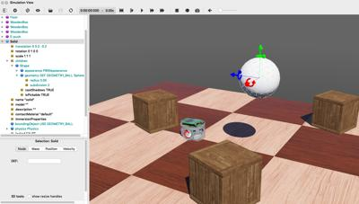
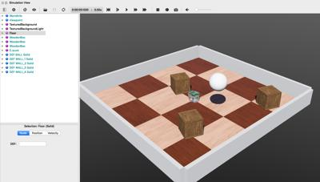

Building a clean model tutorial <<
Previous Next >> NX教科書整理
Webots User Guide Tutorial 2
40723209 吳耕甫
First we create a new simulation based。
首先，創建的模擬創建一個新的模擬。
We will now delete the RectangleArena node and add a simple floor。
我們將刪除該rectangleArena節點，並添加一個簡單的地板。
To define a rigid body, you will have to create a Solid node. Inside this node you will set up different sub-nodes corresponding to the characteristics of the rigid body. The following figure depicts a rigid body and its sub-nodes. The graphical representation of the Solid node is defined by the Shapenodes populating its children list. The collision bounds are defined in its boundingObject field. The graphical representation and the collision shape are often but not necessarily identical. Finally, the physics field defines if the object belongs to the dynamical or to the static environment. All these sub-nodes are optional, but the physics field needs the boundingObject to be defined。
要定義剛體，您將必須創建一個實體節點。在此節點內，您將根據剛體的特性設置不同的子節點。描繪了剛體及其子節點。實體節點的圖形表示由填充其列表的Shape節點定義children。碰撞範圍在其boundingObject 字段中定義。圖形表示和碰撞形狀通常但不一定相同。最後，該physics字段定義對像是屬於動態環境還是屬於靜態環境。所有這些子節點都是可選的，但是physics需要boundingObject 定義該字段。
In the scene tree view, select the last node and press the Add button. In the dialog, open the Bases nodes section and select the Solid node. In the scene tree view, expand the Solid node and select its children field. Add a Shape node to it by using the Add button. Select the appearance field of the Shape node and use the Add button to add a PBRAppearance node.
在場景樹視圖中，選擇最後一個節點，然後按Add按鈕。在對話框中，打開該Bases nodes部分，然後選擇實體節點。在場景樹視圖中，展開實體節點並選擇其children字段。使用按鈕向其添加一個Shape節點Add。選擇形狀節點的appearance字段，然後使用按鈕添加一個節點。AddPBRAppearance。
1.Add a Sphere node as the geometry field of the newly created Shape node.
2.Expand the PBRAppearance node and change its metalness field to 0 and its roughness field to 1.
3.Add another Sphere node to the boundingObject field of the Solid.
4.Finally add a Physics node to the physics field of the Solid.
5.By modifying the translation field of the Solid node, place the ball in front of the robot
6.Save the simulation.
1.將球體節點添加為geometry新創建的形狀節點的字段。
2.展開PBRAppearance節點並將其metalness字段更改為0，並將其roughness字段更改為1。
3.將另一個Sphere節點添加到Solid的boundingObject字段。
4.最後，將一個Physics節點添加到Solid的physics字段中。
5.通過修改實體節點的translation字段，將球放在機器人的前面
6.保存模擬。
40723206 王冠驊
DEF-USE Mechanism
定義使用機制
The DEF-USE mechanism allows to define a node in one place and to reuse that definition elsewhere in the scene tree. This is useful to avoid the duplication of identical nodes in world files. Moreover, it also allows users to modify several objects at the same time.
該DEF-USE機制允許在一個地方定義一個節點，並在場景樹在其他地方重複使用的定義。這對於避免在世界文件中復制相同節點很有用。此外，它還允許用戶同時修改多個對象。
The two Sphere definitions that we have used earlier to define the ball, are redundant. We will now merge these two Spheres into only once using the DEF-USE mechanism.
我們之前用來定義球的兩個Sphere定義是多餘的。現在，我們將使用DEF-USE機制將這兩個Sphere合併為一次。
Now, changing the radius field of the first Sphere node also modifies its boundingObject.For convenience, the boundingObject field accepts also the Shape node (rather than the Sphere node directly). It would be also possible to use the same DEF-USE mechanism at the Shape level as shown in this figure. For now the greatest benefit is being able to also use this Shape directly for graphical purposes. Later this mechanism will turn out to be very useful for some sensors.
現在，更改radius第一個Sphere節點的字段也會修改其boundingObject。為方便起見，該boundingObject字段還接受Shape節點（而不是直接接受Sphere節點）。也可以在Shape級別使用相同的DEF-USE機制，如圖所示。到目前為止，最大的好處就是也可以直接將此Shape用於圖形目的。後來，對於某些傳感器，該機制將變得非常有用。

DEF-USE mechanism on the Sphere node called BALL_GEOMETRY.
Sphere節點上的DEF-USE機制稱為BALL_GEOMETRY。
Add Walls
添加牆
In order to verify your progression, implement by yourself four walls to surround the environment. The walls have to be defined statically to the environment. To understand the difference between static and dynamic, let's take a defined object (the ball) above the ground. If the Physics node is NULL, it will remain frozen in the air during the simulation (static case). If the physics field contains a Physics nodes, it will fall under the effect of gravity (dynamic case).
為了驗證您的進度，請自己實施四堵牆以包圍環境。必鬚根據環境靜態定義牆壁。要了解靜態和動態之間的區別，我們將定義的物體（球）放在地面上方。如果“ 物理”節點為NULL，則在仿真過程中它將保持凍結狀態（靜態情況）。如果該physics字段包含“ 物理”節點，則它將屬於重力作用（動態情況）。
Use as much as possible the DEF-USE mechanism at the Shape level rather than at the Geometry level. Indeed it's more convenient to add an intermediate Shape node in the boundingObject field of the Solid node. The best Geometry primitive to implement the walls is the Box node. Only one Shape has to be defined for all the walls. The expected result is shown in this figure.
在Shape級別而不是Geometry級別，盡可能使用DEF-USE機制。實際上，在實體節點的字段中添加中間Shape節點更為方便。實現牆的最佳幾何原語是Box節點。所有牆壁僅需定義一個形狀。預期結果如圖所示。
Solution: World File
解決方案：世界文件
To compare your world with the solution, go to your files and find the folder named "my_first_simulation" created in Tutorial 1, then go to the "worlds" folder and open with a text editor the right world. This solution as the others is located in the solution directory.
要將您的世界與解決方案進行比較，請轉到文件，找到在教程1中創建的名為“ my_first_simulation”的文件夾，然後轉到“ worlds”文件夾並使用文本編輯器打開正確的世界。 與其他解決方案一樣，該解決方案位於solution目錄中。

The simulation state at the end of this second tutorial.
在第二篇教程結尾處的仿真狀態。
Efficiency
效率
The simulation of rigid bodies is computationally expensive. The simulation speed can be increased by minimizing the number of bounding objects, minimizing the constraints between them (more information about the constraints in the next tutorials), and maximizing the WorldInfo.basicTimeStep field. On each simulation, a trade-off has to be found between simulation speed and realism.
剛體的模擬在計算上是昂貴的。可以通過最小化邊界對象的數量，最小化邊界對象之間的約束（在下一個教程中有關約束的更多信息）以及最大化WorldInfo.basicTimeStep字段來提高仿真速度。在每個模擬中，必須在模擬速度和真實性之間找到一個折衷。
Conclusion
結論
At the end of this tutorial, you are able to create simple environments based on rigid bodies. You are able to add nodes from the scene tree view and to modify their fields. You have become acquainted with the Solid, Physics, Shape, Sphere and Box nodes. You also saw the DEF-USE mechanism that allows to reduce node redundancy of the scene tree.
在本教程的最後，您將能夠基於剛體創建簡單的環境。您可以從場景樹視圖添加節點並修改其字段。您已經熟悉了Solid，Physics，Shape，Sphere和Box節點。您還看到了DEF-USE機制，該機制可減少場景樹的節點冗餘。
Building a clean model tutorial <<
Previous Next >> NX教科書整理